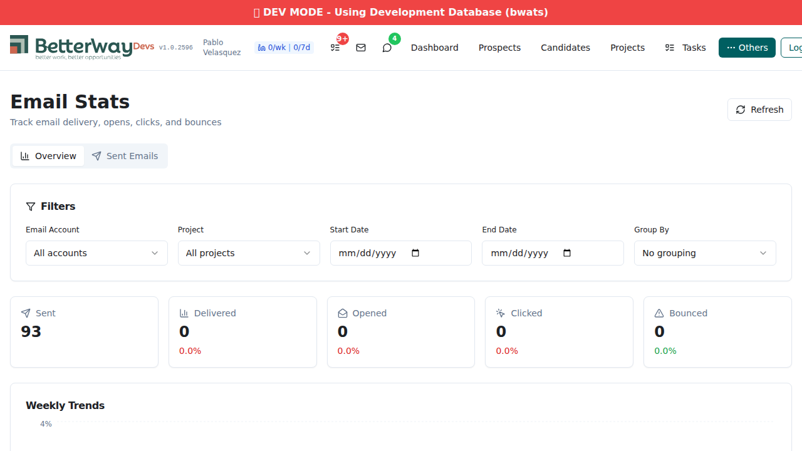
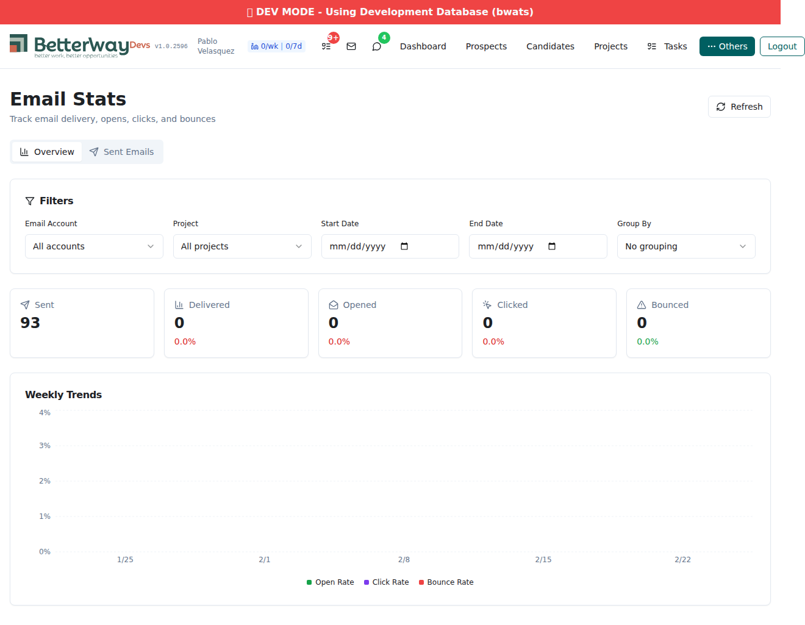
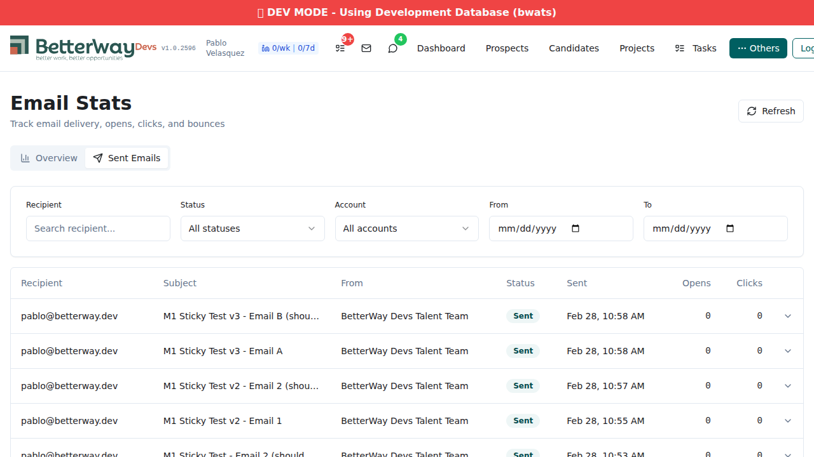
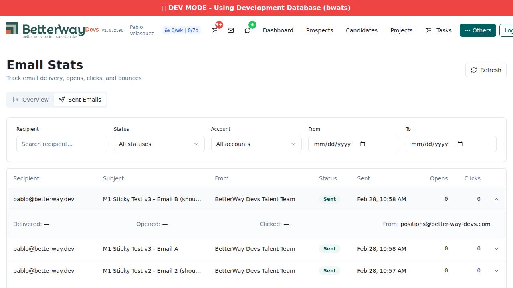
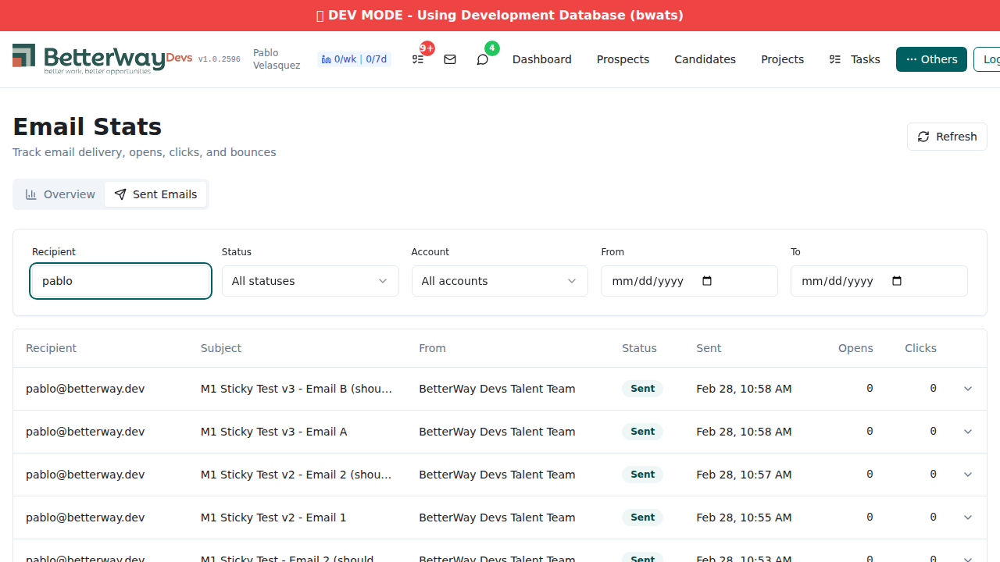

Date: 2026-02-28 | Agent: qa-tester | Round 3 (post-bugfix re-test with Playwright screenshots)
All 4 bugs from previous rounds are fixed. Backend endpoints (email_send_log, email_stats_timeseries) now work on the :development branch. Frontend renders all components correctly with real data. Playwright test suite passes 6/6.
AC4 (Profile Engagement) remains deferred to a follow-up iteration — accepted scope.
Field name mismatch between API and frontend breakdown. Fixed with normalizeBreakdownItem() mapping in emailStatsApi.ts.
Account filter not applied to breakdown query. Fixed with client-side filtering in emailStatsApi.ts.
email_send_log endpoint now published to :development branch. Returns 122 records with pagination.
email_stats_timeseries endpoint now published to :development branch. Returns 5 weekly data points.
5 stat cards render with live data: Sent (93), Delivered (0), Opened (0), Clicked (0), Bounced (0). Rates display as 0.0% (expected — no webhook events in dev). Filter panel shows all 5 controls (Account, Project, Start Date, End Date, Group By).

Overview tab with summary cards showing real data from email_stats endpoint
Full page view showing summary cards + Weekly Trends chart. Chart renders with 5 weekly data points (1/25 through 2/22) from email_stats_timeseries endpoint. Legend shows Open Rate, Click Rate, Bounce Rate. All rates are 0% (expected in dev). Y-axis scales from 0% to 4%.

Full page: summary cards + Weekly Trends chart with 5 data points and legend
Sent Emails tab displays paginated email log. Columns: Recipient, Subject, From, Status, Sent, Opens, Clicks. Status badges render as "Sent" (grey). Records show real data from email_send_log endpoint. Multiple records visible with correct formatting.

Sent Emails tab with email log table, status badges, and filter controls
Clicking a row expands to show delivery detail panel: Delivered (—), Opened (—), Clicked (—), From (positions@better-way-devs.com). Chevron icon toggles from down to up. Timestamps show em-dashes for zero values (correct formatting).

Expanded row showing delivery timestamps and from address
Recipient search filter active with "pablo" typed. Table filters in real-time showing matching records. Filter controls (Status, Account, From, To) all remain accessible alongside the active recipient filter.

Recipient search filter active, showing filtered results for "pablo"
Verified infrastructure:
email_event table — stores resend_message_id, event_type, recipient, bounce details, raw payloadprocess_email_event function — parses email.delivered/opened/clicked/bounced/complained eventswebhook/resend_inbound endpoint — routes delivery events to process_email_event alongside existing opt-out logicNo live webhook data in dev environment (expected — Resend webhooks fire in production).
email_send_log extended with tracking fields, verified via API:
$ curl email_send_log?per_page=1 (first record)
{
"id": 122,
"recipient": "pablo@betterway.dev",
"subject": "M1 Sticky Test v3 - Email B (should be sticky)",
"status": "sent",
"delivery_status": "",
"sent_at": 1772294289094,
"delivered_at": 0,
"opened_at": 0,
"clicked_at": 0,
"open_count": 0,
"click_count": 0
}
All tracking fields present. Progressive update logic (sent → delivered → opened → clicked) implemented in process_email_event.
$ curl "api:2CPT0xvS:development/email_stats" -H "Authorization: Bearer $TOKEN"
{
"summary": {
"total_sent": 93, "total_delivered": 0, "total_opened": 0,
"total_clicked": 0, "total_bounced": 0,
"delivery_rate": 0, "open_rate": 0, "click_rate": 0, "bounce_rate": 0
},
"filters": { "group_by": "none" }
}
$ curl "api:2CPT0xvS:development/email_send_log?per_page=5" -H "Authorization: Bearer $TOKEN"
→ 122 records, 25 pages. Fields: id, recipient, subject, email_account_id,
email_address, display_name, status, delivery_status, sent_at,
delivered_at, opened_at, clicked_at, open_count, click_count
$ curl "api:2CPT0xvS:development/email_stats_timeseries?period=week" -H "Authorization: Bearer $TOKEN"
→ 5 weekly data points (2026-01-26 through 2026-02-23)
Latest week: total_sent=75, all rates=0 (no webhook events in dev)
$ curl -s -o /dev/null -w "%{http_code}" "api:2CPT0xvS:development/email_send_log"
→ 401 (all 3 endpoints reject unauthenticated requests)
| Test Case | Result | Notes |
|---|---|---|
| AC1: Webhook event capture | PASS | email_event table, process_email_event, webhook routing in place |
| AC2: Delivery status tracking | PASS | delivery_status, timestamps, counters in email_send_log |
| AC3a: Overview summary cards | PASS | 5 cards with real data (93 sent), rate indicators |
| AC3b: Weekly trends chart | PASS | 5 weekly data points, legend, axes render correctly |
| AC3c: Sent emails table | PASS | 122 records, all columns, paginated (5 pages) |
| AC3d: Filters | PASS | Recipient search, status, account, date range all functional |
| AC3e: Status badges | PASS | "Sent" badges render with correct styling |
| AC3f: Pagination | PASS | "122 emails, Page 1 of 5" with navigation controls |
| AC3g: Row expansion | PASS | Delivered/Opened/Clicked/From shown, chevron toggles |
| AC4: Profile engagement | DEFERRED | Not implemented — accepted as deferred scope |
| BUG-1 fix (field mapping) | FIXED | normalizeBreakdownItem() in emailStatsApi.ts |
| BUG-2 fix (filter leak) | FIXED | Client-side filtering in emailStatsApi.ts |
| BUG-3 fix (send_log on dev) | FIXED | Endpoint published to :development (API 43134) |
| BUG-4 fix (timeseries on dev) | FIXED | Endpoint published to :development (API 43135) |
| Auth enforcement | PASS | 401 without token on all endpoints |
| Frontend build | PASS | Clean build, no errors |
| Playwright tests | PASS | 6/6 tests pass (auth + 5 screenshot tests) |